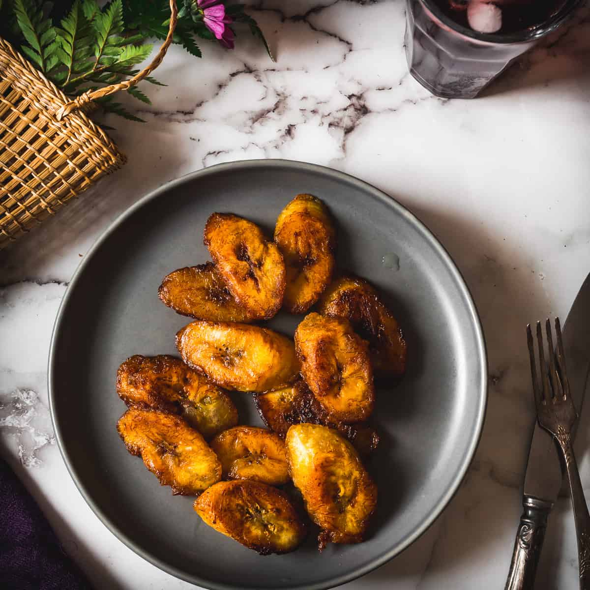

Fried plantain (in Nigeria vaak Dodo genoemd) is een populair gerecht gemaakt van bakbananen die worden geschild, gesneden en gebakken in olie. Het is zoet of hartig, afhankelijk van hoe rijp de plantain is.
